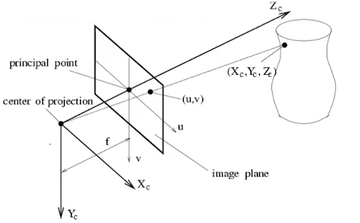

齐次坐标系
二维笛卡尔坐标系下点 \((X,Y)\) 在齐次坐标系下表示为\((x,y,w)\)，其中\(X=x/w\)，\(Y=y/w\) - 点可表示为 \(p= [a \quad b \quad 1][\vec{x} \quad \vec{y}\quad o]\)，向量可表示为 \(p= [a \quad b \quad 0][\vec{x} \quad \vec{y}\quad o]\) - 齐次坐标系可使得平移变换由以下矩阵运算表示
\[ M' = \begin{bmatrix} 1 & 0 & t_x \\ 0 & 1 & t_y \\ 0 & 0 & 1 \end{bmatrix}\begin{bmatrix} x \\ y\\ 1 \end{bmatrix} \]
2D 坐标变换
某一点\(P\)经过平移、旋转、缩放后可得到变换后的点\(P'\)： \[ P' =\begin{bmatrix} 1 & 0 & t_x \\ 0 & 1 & t_y \\ 0 & 0 & 1 \end{bmatrix} \begin{bmatrix} cos\theta & -sin\theta & 0 \\ sin\theta & cos\theta & 0 \\ 0 & 0 & 1 \end{bmatrix} \begin{bmatrix} s_x & 0 & 0 \\ 0 & s_y & 0 \\ 0 & 0 & 1 \end{bmatrix} \begin{bmatrix} x \\ y\\ 1 \end{bmatrix} \] \[ = \begin{bmatrix} cos\theta & -sin\theta & t_x \\ sin\theta & cos\theta & t_y \\ 0 & 0 & 1 \end{bmatrix} \begin{bmatrix} s_x & 0 & 0 \\ 0 & s_y & 0 \\ 0 & 0 & 1 \end{bmatrix} \begin{bmatrix} x \\ y\\ 1 \end{bmatrix} \]
\[ = \begin{bmatrix} R S & t \\ 0 & 1 \end{bmatrix} \begin{bmatrix} x \\ y\\ 1 \end{bmatrix} \]
3D坐标变换
3维旋转矩阵 \[ R_x(\alpha) = \begin{bmatrix} 1 & 0 & 0 \\ 0 & cos\alpha & -sin\alpha \\ 0 & sin\alpha & cos\alpha \end{bmatrix}, R_y(\beta) = \begin{bmatrix} cos\beta & -sin\beta & 0 \\ 0 & 1 & 0 \\ -sin\beta & 0 & cos\beta \end{bmatrix}, R_z(\gamma) = \begin{bmatrix} cos\gamma & -sin\gamma & 0 \\ sin\gamma & cos\gamma & 0 \\ 0 & 0 & 1 \end{bmatrix} \] \[ R_{3 \times 3} = R_x(\alpha) R_y(\beta) R_z(\gamma) \] 某一点\(P\)经过平移、旋转、缩放后可得到变换后的点\(P'\)：
\[ P' = \begin{bmatrix} RS & T \\ 0 & 1 \end{bmatrix}_{4 \times 4} \begin{bmatrix} x \\ y \\ z \\ 1 \end{bmatrix} \]
相机内参

- 以相机光心为坐标系原点，z轴指向相机前方，x向右，y向左，建立3维相机空间坐标系，设空间中某一点坐标：\(P(X,Y,Z)\)
- 该点投影在像平面的坐标记作\(p(x,y)\)
由相似三角形可知： \[ \frac{Z}{f} = \frac{X}{x} = \frac{Y}{y} \]
\[ x=f \frac{X}{Z},\quad y = f \frac{Y}{Z} \]
将点\(m(x,y)\) 在平移\([c_x,c_y]\) 缩放\([\alpha, \beta]\)转换为像平面坐标系下坐标 \(P'(u,v)\)： \[ u = x\alpha + c_x, \quad v = y\beta + c_y \]
记： \[ f_x = f\alpha, \quad f_y = f\beta，单位是像素 \]
则\(P->P'\)转换关系为： \[ u = f_x \frac{X}{Z}+c_x,\quad v = f_y \frac{Y}{Z}+c_y \]
\[ P' = Z\begin{bmatrix} u \\ v \\ 1 \end{bmatrix} = \begin{bmatrix} f_x & 0 & c_x \\ 0 & f_y & c_y \\ 0 & 0 & 1 \end{bmatrix} \begin{bmatrix} X \\ Y \\ Z \end{bmatrix} = KP \]
即得相机内参矩阵\(K\)，其中 \(f_x,f_y,c_x,c_y\) 的单位为像素， \(c_x,c_y\) 是原点的平移尺寸。\(f\)为像距，\(dX,dY\) 分别表示X,Y方向上的一个像素在相机感光板上的物理长度（即一个像素在感光板上是多少毫米），\(fx=f/dX, fy=f/dY\)。
相机外参
上述计算公式是由相机坐标系转到像平面坐标系的计算逻辑，下面将世界坐标系\(P_w\)变换到相机坐标系中的\(P\)。 \[ P_w = \begin{bmatrix} x_w \\ y_w \\ z_w \\ 1 \end{bmatrix} \]
相机位资由旋转矩阵\(R\)和平移向量\(T\)描述（\(R\)和\(T\)即为相机的外参），即 $$ P = \[\begin{bmatrix} RS & T \\ 0 & 1 \end{bmatrix}\] _{4 4} \[\begin{bmatrix} x \\ y \\ z \\ 1 \end{bmatrix}\] \[ \] P' = \[\begin{bmatrix} K & 0 \\ \end{bmatrix}\] _{3 4} \[\begin{bmatrix} R & T \\ 0 & 1 \\ \end{bmatrix}\] {4 4} P_w = \begin{bmatrix} f_x & 0 & c_x & 0 \ 0 & f_y & c_y & 0 \ 0 & 0 & 1 & 0 \end{bmatrix} \begin{bmatrix} r{11} & r_{12} & r_{13} & t_1 \ r_{21} & r_{22} & r_{23} & t_1 \ r_{31} & r_{32} & r_{33} & t_3 \ 0 & 0 & 0 & 1 \end{bmatrix} \[\begin{bmatrix} x \\ y \\ z \\ 1 \end{bmatrix}\]$$
OPENCV 相机标定原理
TODO: DLT超定解求解逻辑